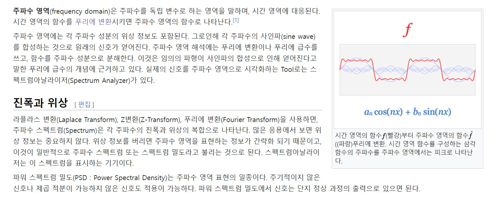
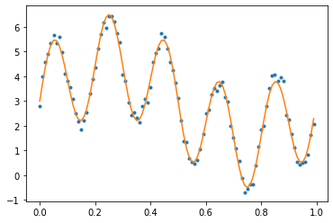

from IPython.display import IFrame
IFrame("https://upload.wikimedia.org/wikipedia/commons/7/72/Fourier_transform_time_and_frequency_domains_%28small%29.gif", width="300" ,height = "240",frameborder="0")- ref: 파이썬으로 배우는 음성인식
- ref: 퓨리에변환 교수님 버전
- ref: wiki
푸리에 변환
시간 신호를 주파수별 신호로 분해하는 방법론으로 푸리에 변환 이 있다.
푸리에 변환은 “모든 주기적인 신호는 주파수가 다른 삼각함수 조합으로 표현될 수 있다.”는 정리1에 의한 것이다.
푸리에 변환에는 연속치인 신호를 연속치인 주파수 축으로 분해하는 연속푸리에 변환 , 이산치 시간 신호를 연속치 주파수 축으로 분해하는 이산시간 푸리에 변환 , 그리고 이산치 시간 신호를 이산치 주파수 축으로 분해하는 이산 푸리에 변환 이 있다.2
위키버전
푸리에 변환(Fourier transform, FT) 은 시간이나 공간에 대한 함수를 시간 또는 공간 주파수 성분으로 분해하는 변환을 말한다. 종종 이 변환으로 나타난 주파수 영역에서 함수를 표현한 결과물을 가리키는 용어로도 사용된다. 조제프 푸리에가 열전도에 대한 연구에서 열 방정식의 해를 구할 때 처음 사용되었다.
시간에 대한 함수를 푸리에 변환했을 때 얻어지는 복소함수에서 각 주파수에서의 진폭은 원래 함수를 구성하던 그 주파수 성분의 크기를, 편각은 기본 사인 곡선과의 위상차(phase offset)를 나타낸다. 푸리에 변환된 결과물로부터 피변환함수를 복원할 수도 있다. 이를 증명하는 정리를 푸리에 역변환 정리 라고 한다.
시간 영역에서는 좁은 지역에서 표현되는 함수를 주파수 영역으로 푸리에 변환하면 함수가 넓게 퍼지게 된다. 이를 불확정성 원리라 한다. 그러나 가우스 함수는 푸리에 변환을 해도 똑같이 가우스 함수로 나타난다. 이 가우스 함수는 확률 이론과 통계학에서 뿐만 아니라 정규 분포를 나타내는 물리 현상에 대한 연구에서 매우 중요하게 다뤄진다. 조제프 푸리에가 푸리에 변환을 통해 구한 열 방정식의 해가 바로 가우스 함수의 꼴을 띄었다.
엄밀히 말하자면 푸리에 변환은 일종의 적분 변환 으로, 리만 이상적분이어서 더 복잡한 적분 이론을 요구하는 응용분야에서는 적합하지 않을 수 있다. 대표적으로 많은 경우 디랙 델타 함수를 일종의 함수로 푸리에 변환에 응용하지만, 수학적으로 엄밀한 관점을 취하자면 더 심도있는 고찰이 필요한 것이다.
주파수 영역

푸리에 변환의 단점
시간에 대한 연속성이 고려되지 않음으로써 많은 문제가 야기된다. 이러한 단점을 보완하기 위해 DTFT, STFT, 웨이블릿 변환, 가버변환, MFCCs 등등이 연구되어 나왔다.
- 와닿지가 않아.. 웨이블릿 변환? 가버변환?
교수님 버전\((\star \star \star)\)
ref : Click here!
예비학습: 모델링이란?
- 모델링이란?
\[y_i = f(x_i) + \epsilon_i\]
의 꼴에서 \(f\)의 모양을 결정하는 과정을 의미한다.
- 파라메트릭 모델링
\(f\)의 모양을 결정할 때 데이터에 대한 확실한 사전정보가 있는 경우가 있다. 예를들어 “\(f(x)\)는 \(x\)에 선형변환으로 만들어질 수 있다. (즉, \(f(x) = \beta_0 + \beta_1x\))”라는 사실을 알고 있는 경우이다. 이는
\[y_i = f(x_i) + \epsilon_i\]
와 같은 모델에서 \(f\)가 어떠한 형태를 가질것인지를 미리 알고있다고 생각한다는 말과 같다. 이처럼 \(f\)가 어떤 모양인지 미리 알고 접근하는 방법을 파라메트릭 모델링 이라고 한다.
- 세미파라메트릭 모델링
사전정보가 없어서 \(f\)를 어떻게 모델링할지 감이 안 올수도 있다. 즉 자료를 봤는데 선형의 모양을 가지는지 어떤지 감을 못잡겠는 경우이다. 이것을 바꾸어 말하면 \(\{ y_i\}\)가 \(\{x_i\}\)의 어떤 space에 있는지 감을 못잡겠다는 뜻이다. 혹은 모델링이 귀찮을 수도 있다. 이럴 경우 \(f(x)\)가 \(x\)의 어떤 특정스페이스 \(\cal{A}\)의 부분공간에 존재한다고 가정하고 그 특정 스페이스 \(\cal{A}\)를 생성할 수 있는 베이시스를 선택하여 문제를 풀 수 있다. 가령 예를들면 “\(f(x)\)가 어떤 공간에 있는지 모르겠는데 최소한 비숍스페이스의 부분공간에 있는 것 같아”라고 생각한다면 웨이블릿 베이시스를 선택하여 모델링 하는 것이다. 보통 위와 같은 접근법은 무한대의 basis를 활용한다. 많은 수학자들이 “이런식으로 무한개의 basis를 활용하면 특정공간에 있는 어떠한 함수도 표현할 수 있어요~” 이런식의 증명을 많이 해놓았는데 이런 증명결과들을 적극적으로 활용하는 셈이다. 이렇게 \(f\)를 표현하는게 무한개의 basis를 활용하는 모델링을 semi-parametric modeling 이라고 한다.
- 웨이블릿과 푸리에변동으로 \(f(x)\)를 추론하는 것이 대표적인 세미파라메트릭 모델링이다.
import
예제신호 소개
- 아래와 같은 신호를 고려하자.
n=100
t=np.linspace(0,0.99,n)
f_true =3+ 1.5*np.sin(2*np.pi*t)+2*np.sin(10*np.pi*t)
ϵ=np.random.normal(scale=0.2,size=n)
f = f_true + ϵ
plt.plot(t,f,'.')
plt.plot(t,f_true)
- 목표 : 파란점을 관찰 \(\to\) 주황선을 추론
- 수식화하면 아래와 같다.
\[f_i = 3 + 1.5\times \sin(2\pi t_i) + 2\times \sin(10\pi t_i) + \epsilon_i, \quad t_i = \frac{i}{100}\]
회귀분석 느낌으로 표현하면 아래와 같이 표현가능하다.
\[y_i = \beta_0 + \beta_1x_{i1} + \beta_2x_{i2} + \epsilon_i\]
단, \(x_{i1} = \sin(2\pi t_i)\)이고 \(x_{i2} = \sin(10\pi t_i).\)
우리의 목표는 이제 아래와 같이 정리할 수 있다.
- 주어진 것: \((y_i, x_{i1}, x_{i2})\)
- 목표: \(\beta_0, \beta_1, \beta_2\)를 추론
방법1: 회귀분석
- x1, x2, y를 아래와 같이 col-vector로 선언
\(\bf{X} = [1, x1, x2]\) 라고 생각하고 회귀분석을 수행한다.
# n=100
# f = f_true + ϵ
X=np.ones((n,3))
X[:,1] = x1
X[:,2] = x2
X = np.matrix(X)
y = np.matrix(f).T # y는 col-vec로 선언
βhat = (X.T*X).I*X.T*y
βhatmatrix([[3.00673254],
[1.47090366],
[2.06163848]])- R을 이용해서 구해볼 수도 있음.
방법2
x1, x2을 모른다면? 우리가 \(f=y\) 만을 알고있다면?
그러니까 \(x_{i1}=\sin(2\pi t_i)\)이고 \(x_{i2} = \sin(10\pi t_i)\) 인지 모른다면? (구체적으로 2와 10과 같은 숫자를 모른다면? = 주파수를 모른다면?)
잘은 모르겠지만 아래의 베이시스중에 하나는 걸릴 것 같다.
X=np.ones((n,6))
X[:,1]=x1
X[:,2]=x2
X[:,3]=x3
X[:,4]=x4
X[:,5]=x5
X=np.matrix(X)
βhat= (X.T*X).I*X.T*y
βhatmatrix([[ 3.00673254e+00],
[ 1.47090366e+00],
[-2.51527234e-02],
[-8.29437604e-04],
[ 5.00178446e-02],
[ 2.06163848e+00]])그럴듯함
적합해보자..
비판1: 베이시스를 막 추가했는데 (\(=p\)가 늘어났는데) 오버피팅이 생기는것이 아닌가? \(\to\) 절대안생김
비판2: 저 베이시스중에서 안걸리면 어떻게 할것임? \(\to\) 무한대의 베이시스를 쓰겠음 \(\Rightarrow\) 이게 퓨리에 변환
방법3: 퓨리에 변환
- 퓨리에 변환 결과
- 세부적인 이론이 있지만 실수인 경우는 fbar는 아래의 특징을 가짐
- fbar[0]을 제외하고 나머지는 대칭임.
- 따라서 그림을 아래와 같이 그려도 정보손실없음
대충보면 인덱스 10이전까지의 값만 살펴보면 될것 같도 나머지는 \(0\) 근처임
이것은 각각 1, x1, x2에 대한 베이시스임을 알 수 있다.
- 퓨리에 변환요약: 아무런 생각없이 무한대의 베이시스를 넣고 계수값을 구하면 잘 적합된다.
- 퓨리에의 통찰: 어지간한 함수는 저주파부터 고주파의 cos함수 (혹은 sin함수)에 적당한 계수를 곱한뒤 합치면 표현가능하다.
PCA
- 생각해보니까 베이시스를 무한대로 넣는것이 매우 통쾌해보임
- 종종 \(p\)가 너무 커서 곤란한 상황이 많음. \(\to\) 공부해야할 것도 많음.
- 다중공선성
- 오버피팅
- 변수선택
- \(\dots\)
- 베이시스가 직교였더라면.. \(\to\) 기존 베이시스를 변환하여 직교 베이시스로 만들자!
- 기존 베이시스를 변환하여 직교 베이시스로 만드는 방법: Eigen-value decomposition, SVD